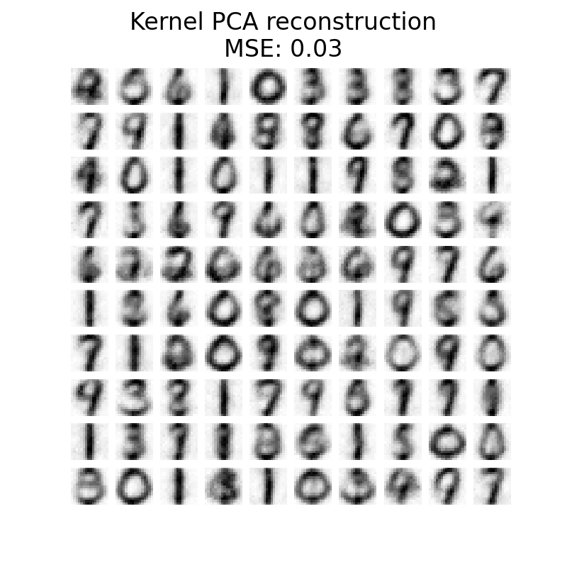

Note
Go to the end to download the full example code or to run this example in your browser via Binder
Image denoising using kernel PCA¶
This example shows how to use KernelPCA to
denoise images. In short, we take advantage of the approximation function
learned during fit to reconstruct the original image.
We will compare the results with an exact reconstruction using
PCA.
We will use USPS digits dataset to reproduce presented in Sect. 4 of [1].
# Authors: Guillaume Lemaitre <guillaume.lemaitre@inria.fr>
# Licence: BSD 3 clause
Load the dataset via OpenML¶
The USPS digits datasets is available in OpenML. We use
fetch_openml to get this dataset. In addition, we
normalize the dataset such that all pixel values are in the range (0, 1).
import numpy as np
from sklearn.datasets import fetch_openml
from sklearn.model_selection import train_test_split
from sklearn.preprocessing import MinMaxScaler
X, y = fetch_openml(data_id=41082, as_frame=False, return_X_y=True, parser="pandas")
X = MinMaxScaler().fit_transform(X)
The idea will be to learn a PCA basis (with and without a kernel) on noisy images and then use these models to reconstruct and denoise these images.
Thus, we split our dataset into a training and testing set composed of 1,000 samples for the training and 100 samples for testing. These images are noise-free and we will use them to evaluate the efficiency of the denoising approaches. In addition, we create a copy of the original dataset and add a Gaussian noise.
The idea of this application, is to show that we can denoise corrupted images by learning a PCA basis on some uncorrupted images. We will use both a PCA and a kernel-based PCA to solve this problem.
X_train, X_test, y_train, y_test = train_test_split(
X, y, stratify=y, random_state=0, train_size=1_000, test_size=100
)
rng = np.random.RandomState(0)
noise = rng.normal(scale=0.25, size=X_test.shape)
X_test_noisy = X_test + noise
noise = rng.normal(scale=0.25, size=X_train.shape)
X_train_noisy = X_train + noise
In addition, we will create a helper function to qualitatively assess the image reconstruction by plotting the test images.
import matplotlib.pyplot as plt
def plot_digits(X, title):
"""Small helper function to plot 100 digits."""
fig, axs = plt.subplots(nrows=10, ncols=10, figsize=(8, 8))
for img, ax in zip(X, axs.ravel()):
ax.imshow(img.reshape((16, 16)), cmap="Greys")
ax.axis("off")
fig.suptitle(title, fontsize=24)
In addition, we will use the mean squared error (MSE) to quantitatively assess the image reconstruction.
Let’s first have a look to see the difference between noise-free and noisy images. We will check the test set in this regard.
plot_digits(X_test, "Uncorrupted test images")
plot_digits(
X_test_noisy, f"Noisy test images\nMSE: {np.mean((X_test - X_test_noisy) ** 2):.2f}"
)

Learn the PCA basis¶
We can now learn our PCA basis using both a linear PCA and a kernel PCA that uses a radial basis function (RBF) kernel.
Reconstruct and denoise test images¶
Now, we can transform and reconstruct the noisy test set. Since we used less components than the number of original features, we will get an approximation of the original set. Indeed, by dropping the components explaining variance in PCA the least, we hope to remove noise. Similar thinking happens in kernel PCA; however, we expect a better reconstruction because we use a non-linear kernel to learn the PCA basis and a kernel ridge to learn the mapping function.
X_reconstructed_kernel_pca = kernel_pca.inverse_transform(
kernel_pca.transform(X_test_noisy)
)
X_reconstructed_pca = pca.inverse_transform(pca.transform(X_test_noisy))
plot_digits(X_test, "Uncorrupted test images")
plot_digits(
X_reconstructed_pca,
f"PCA reconstruction\nMSE: {np.mean((X_test - X_reconstructed_pca) ** 2):.2f}",
)
plot_digits(
X_reconstructed_kernel_pca,
(
"Kernel PCA reconstruction\n"
f"MSE: {np.mean((X_test - X_reconstructed_kernel_pca) ** 2):.2f}"
),
)
- 
PCA has a lower MSE than kernel PCA. However, the qualitative analysis might not favor PCA instead of kernel PCA. We observe that kernel PCA is able to remove background noise and provide a smoother image.
However, it should be noted that the results of the denoising with kernel PCA
will depend of the parameters n_components, gamma, and alpha.
Total running time of the script: (0 minutes 23.342 seconds)